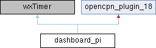

- Generated on Sat Sep 5 2026 05:31:30 for OpenCPN Partial API docs by
 1.9.8
1.9.8
|
OpenCPN Partial API docs
|

Public Member Functions | |
| dashboard_pi (void *ppimgr) | |
| int | Init () override |
| Initialize the plugin and declare its capabilities. | |
| bool | DeInit () override |
| Clean up plugin resources. | |
| void | Notify () override |
| int | GetAPIVersionMajor () override |
| Returns the major version number of the plugin API that this plugin supports. | |
| int | GetAPIVersionMinor () override |
| Returns the minor version number of the plugin API that this plugin supports. | |
| int | GetPlugInVersionMajor () override |
| Returns the major version number of the plugin itself. | |
| int | GetPlugInVersionMinor () override |
| Returns the minor version number of the plugin itself. | |
| wxBitmap * | GetPlugInBitmap () override |
| Get the plugin's icon bitmap. | |
| wxString | GetCommonName () override |
| Get the plugin's common (short) name. | |
| wxString | GetShortDescription () override |
| Get a brief description of the plugin. | |
| wxString | GetLongDescription () override |
| Get detailed plugin information. | |
| void | SetNMEASentence (wxString &sentence) override |
| Receive all NMEA 0183 sentences from OpenCPN. | |
| void | SetPositionFixEx (PlugIn_Position_Fix_Ex &pfix) override |
| Updates plugin with extended position fix data at regular intervals. | |
| void | SetCursorLatLon (double lat, double lon) override |
| Receives cursor lat/lon position updates. | |
| int | GetToolbarToolCount () override |
| Returns the number of toolbar tools this plugin provides. | |
| void | OnToolbarToolCallback (int id) override |
| Handles toolbar tool clicks. | |
| void | ShowPreferencesDialog (wxWindow *parent) override |
| Shows the plugin preferences dialog. | |
| void | SetColorScheme (PI_ColorScheme cs) override |
| Updates plugin color scheme. | |
| void | OnPaneClose (wxAuiManagerEvent &event) |
| void | UpdateAuiStatus () override |
| Updates AUI manager status. | |
| bool | SaveConfig () |
| void | PopulateContextMenu (wxMenu *menu) |
| void | ShowDashboard (size_t id, bool visible) |
| int | GetToolbarItemId () const |
| int | GetDashboardWindowShownCount () |
| void | SetPluginMessage (wxString &message_id, wxString &message_body) override |
| void | UpdateSumLog (bool) |
Definition at line 198 of file dashboard_pi.h.
| dashboard_pi::dashboard_pi | ( | void * | ppimgr | ) |
Definition at line 491 of file dashboard_pi.cpp.
|
override |
Definition at line 501 of file dashboard_pi.cpp.
|
overridevirtual |
Clean up plugin resources.
Called by OpenCPN when plugin is disabled. Shall release any resources allocated by the plugin. Good place to persist plugin configuration.
Reimplemented from opencpn_plugin.
Definition at line 709 of file dashboard_pi.cpp.
|
overridevirtual |
Returns the major version number of the plugin API that this plugin supports.
This method must be implemented by all plugins to declare compatibility with a specific major version of the OpenCPN plugin API.
Reimplemented from opencpn_plugin.
Definition at line 955 of file dashboard_pi.cpp.
|
overridevirtual |
Returns the minor version number of the plugin API that this plugin supports.
This method must be implemented by all plugins to declare compatibility with a specific minor version of the OpenCPN plugin API.
Reimplemented from opencpn_plugin.
Definition at line 957 of file dashboard_pi.cpp.
|
overridevirtual |
Get the plugin's common (short) name.
This required method should return a short name used to identify the plugin in lists and menus.
Reimplemented from opencpn_plugin.
Definition at line 965 of file dashboard_pi.cpp.
| int dashboard_pi::GetDashboardWindowShownCount | ( | ) |
Definition at line 3338 of file dashboard_pi.cpp.
|
overridevirtual |
Get detailed plugin information.
This required method should return a longer description including:
Reimplemented from opencpn_plugin.
Definition at line 971 of file dashboard_pi.cpp.
|
overridevirtual |
Get the plugin's icon bitmap.
FIXME static wxBitmap* LoadSVG(const wxString filename, unsigned int width, unsigned int height) { if (!gFrame) return new wxBitmap(width, height); // We are headless.
This method should return a wxBitmap containing the plugin's icon for display in the plugin manager and other UI elements.
#ifdef ANDROID return loadAndroidSVG(filename, width, height); #elif defined(ocpnUSE_SVG) wxSVGDocument svgDoc; if (svgDoc.Load(filename)) return new wxBitmap(svgDoc.Render(width, height, NULL, true, true)); else return new wxBitmap(width, height); #else return new wxBitmap(width, height); #endif }
wxBitmap* opencpn_plugin::GetPlugInBitmap() { auto bitmap = PluginLoader::GetInstance()->GetPluginDefaultIcon(); return const_cast<wxBitmap*>(bitmap); }
Reimplemented from opencpn_plugin.
Definition at line 963 of file dashboard_pi.cpp.
|
overridevirtual |
Returns the major version number of the plugin itself.
This method should return the plugin's own major version number, which is used by OpenCPN for plugin version management and display.
Reimplemented from opencpn_plugin.
Definition at line 959 of file dashboard_pi.cpp.
|
overridevirtual |
Returns the minor version number of the plugin itself.
This method should return the plugin's own minor version number, which is used by OpenCPN for plugin version management and display.
Reimplemented from opencpn_plugin.
Definition at line 961 of file dashboard_pi.cpp.
|
overridevirtual |
Get a brief description of the plugin.
This required method should return a short description (1-2 sentences) explaining the plugin's basic functionality.
Reimplemented from opencpn_plugin.
Definition at line 967 of file dashboard_pi.cpp.
|
inline |
Definition at line 231 of file dashboard_pi.h.
|
overridevirtual |
Returns the number of toolbar tools this plugin provides.
This method should return how many toolbar buttons/tools the plugin will add. Must be implemented if plugin sets INSTALLS_TOOLBAR_TOOL capability flag.
Reimplemented from opencpn_plugin.
Definition at line 3256 of file dashboard_pi.cpp.
|
overridevirtual |
Initialize the plugin and declare its capabilities.
This required method is called by OpenCPN during plugin loading. It should:
Reimplemented from opencpn_plugin.
Definition at line 510 of file dashboard_pi.cpp.
|
override |
Definition at line 751 of file dashboard_pi.cpp.
| void dashboard_pi::OnPaneClose | ( | wxAuiManagerEvent & | event | ) |
Definition at line 3352 of file dashboard_pi.cpp.
|
overridevirtual |
Handles toolbar tool clicks.
Called when the user clicks a plugin's toolbar button. Must be implemented if plugin declares WANTS_TOOLBAR_CALLBACK capability.
| id | The tool ID assigned when tool was added via InsertPlugInTool() |
Reimplemented from opencpn_plugin.
Definition at line 3374 of file dashboard_pi.cpp.
| void dashboard_pi::PopulateContextMenu | ( | wxMenu * | menu | ) |
Definition at line 4094 of file dashboard_pi.cpp.
| bool dashboard_pi::SaveConfig | ( | ) |
Definition at line 3822 of file dashboard_pi.cpp.
|
overridevirtual |
Updates plugin color scheme.
Called when OpenCPN's color scheme changes between day, dusk and night modes. Plugins should update their UI colors to match the new scheme.
| cs | New color scheme to use:
|
Reimplemented from opencpn_plugin.
Definition at line 3329 of file dashboard_pi.cpp.
|
overridevirtual |
Receives cursor lat/lon position updates.
This method is called when the cursor moves over the chart. Must be implemented if plugin sets WANTS_CURSOR_LATLON flag.
| lat | Cursor latitude in decimal degrees |
| lon | Cursor longitude in decimal degrees |
Reimplemented from opencpn_plugin.
Definition at line 3219 of file dashboard_pi.cpp.
|
overridevirtual |
Receive all NMEA 0183 sentences from OpenCPN.
Plugins can implement this method to receive all NMEA 0183 sentences. They must set the WANTS_NMEA_SENTENCES capability flag to receive updates.
| sentence | The NMEA 0183 sentence |
Reimplemented from opencpn_plugin.
Definition at line 1016 of file dashboard_pi.cpp.
|
overridevirtual |
Reimplemented from opencpn_plugin_18.
Definition at line 3224 of file dashboard_pi.cpp.
|
overridevirtual |
Updates plugin with extended position fix data at regular intervals.
Called by OpenCPN approximately once per second (1 Hz), regardless of how frequently new position data is actually received from GPS/NMEA sources. This provides plugins with a steady, predictable update rate for navigation calculations and display updates.
Extends SetPositionFix() by adding magnetic and true heading information when available from HDM/HDT NMEA sentences.
| pfix | Extended position fix data containing:
|
Reimplemented from opencpn_plugin_18.
Definition at line 3132 of file dashboard_pi.cpp.
| void dashboard_pi::ShowDashboard | ( | size_t | id, |
| bool | visible | ||
| ) |
Definition at line 4109 of file dashboard_pi.cpp.
|
overridevirtual |
Shows the plugin preferences dialog.
This method is called when the user requests the plugin preferences through the OpenCPN options dialog. Must be implemented if plugin sets WANTS_PREFERENCES flag.
| parent | Parent window to use for dialog |
Reimplemented from opencpn_plugin.
Definition at line 3258 of file dashboard_pi.cpp.
|
overridevirtual |
Updates AUI manager status.
Called to notify plugins using wxAUI interface that they should update their AUI managed windows and panes. Must be implemented if plugin declares USES_AUI_MANAGER capability.
Reimplemented from opencpn_plugin.
Definition at line 3462 of file dashboard_pi.cpp.
| void dashboard_pi::UpdateSumLog | ( | bool | write | ) |
Definition at line 6602 of file dashboard_pi.cpp.